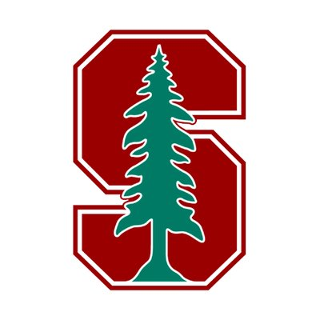

Stern Civics Immersion Program
"In the Stern Civics Immersion Program, students have the chance to build a community of peers and mentors committed to civic engagement and action."
By the end of the program, students will:
• Be better equipped to actively participate in government and politics at the national, state, and local levels
• Be able to lead and participate in civil discussions with people from different backgrounds and perspectives
• Demonstrate effective leadership skills, helping students inspire others to become change agents in their communities
• Be better suited to succeed in secondary and post-secondary education environments

Stanford Summer Humanities Institute
"Stanford Summer Humanities Institute is a summer enrichment program where rising high school juniors and seniors explore the big questions at the heart of the humanities in seminars led by distinguished Stanford professors."